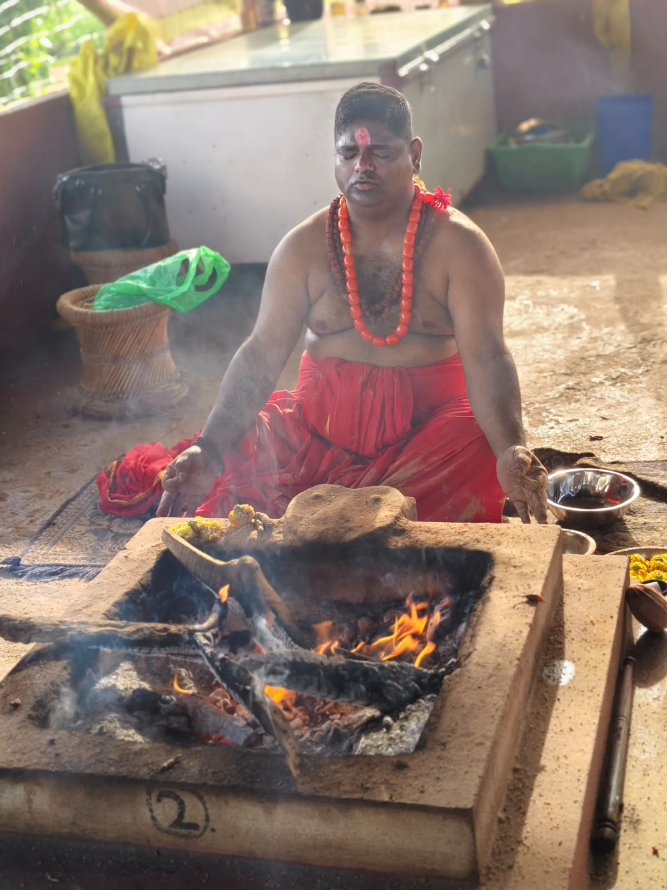

Love Problem Guidance
Compassionate spiritual consultation for emotional clarity, communication and renewed harmony.
Request consultation →— Authentic spiritual guidance rooted in tradition
Confidential online consultations for spiritual well-being, relationship harmony, energy balance and personal clarity— available to clients across the Globe.

Guided by sacred tradition, disciplined practice and reverence for the ancient spiritual heritage of Tantra.

— About the research center
Deepak Joshi Tantra Research Center is dedicated to the study and practice of Tantra, Mantra, Yantra and spiritual disciplines. Drawing on years of experience and deep study, Deepak Joshi offers guidance in Tantra Sadhana, mantra practice, yantra wisdom, Kundalini awakening, chakra practice, Devi worship, Bhairav Sadhana and spiritual development.
The center also provides consultation related to energy balance, protection from negative influences, obstacle removal, planetary harmony, wish fulfillment and personal spiritual practice. Its purpose is to help people cultivate positive energy, inner strength, mental peace and spiritual awareness through ancient wisdom applied with care and responsibility.
“With informed guidance, sincere practice and positive intention, a person can move toward greater balance, confidence and inner peace.”916376242797
— Areas of guidance —
Every conversation is handled with respect, discretion and a thoughtful understanding of your individual situation.
Compassionate spiritual consultation for emotional clarity, communication and renewed harmony.
Request consultation →Traditional spiritual guidance focused on protection, balance and clearing distressing influences.
Request consultation →Confidential guidance rooted in traditional practices for relationship and personal concerns.
Request consultation →Personalized consultation to support trust, understanding and peace within relationships.
Request consultation →Spiritual support for couples seeking calmer communication, mutual respect and reconciliation.
Request consultation →Thoughtful guidance for those hoping to rebuild connection, trust and emotional warmth.
Request consultation →Private consultation for understanding unresolved emotions and finding a positive way forward.
Request consultation →One-to-one spiritual guidance for relationship challenges, emotional healing and clarity.
Request consultation →Our spiritual approach is rooted in reverence, discipline and a deep respect for the traditions associated with the sacred Kamakhya Shakti Peetha.
916376242797— Why choose us —

Years of disciplined study and sincere spiritual practice inform each consultation.
Your personal circumstances are handled with discretion, empathy and confidentiality.
Recommendations are considered in the context of your concerns, needs and goals.
Convenient online guidance for clients across the United States and around the world.
— Understanding the tradition
Tantra is an ancient spiritual tradition encompassing a wide field of study, discipline, symbolism and practice. Historical texts describe different streams, commonly interpreted as constructive and more esoteric paths. The seven classical concepts below are presented for cultural and educational understanding.
A traditional practice associated with attraction, positive presence and meaningful connection.
A classical Tantra concept studied in relation to influence, intention and personal discipline.
A spiritual practice traditionally associated with removing obstacles and unwanted energies.
A traditional discipline described as pausing harmful influences and restoring stability.
A classical practice connected with personal magnetism, positive attention and emotional harmony.
A traditional concept associated with creating distance from harmful influences or associations.
An advanced historical Tantra concept referenced in ancient scriptures and approached only as scholarly tradition.
— Sacred journey —
— Private online consultation
Share your concern privately. Complete the form and your message will open directly in WhatsApp so you can begin a secure conversation.